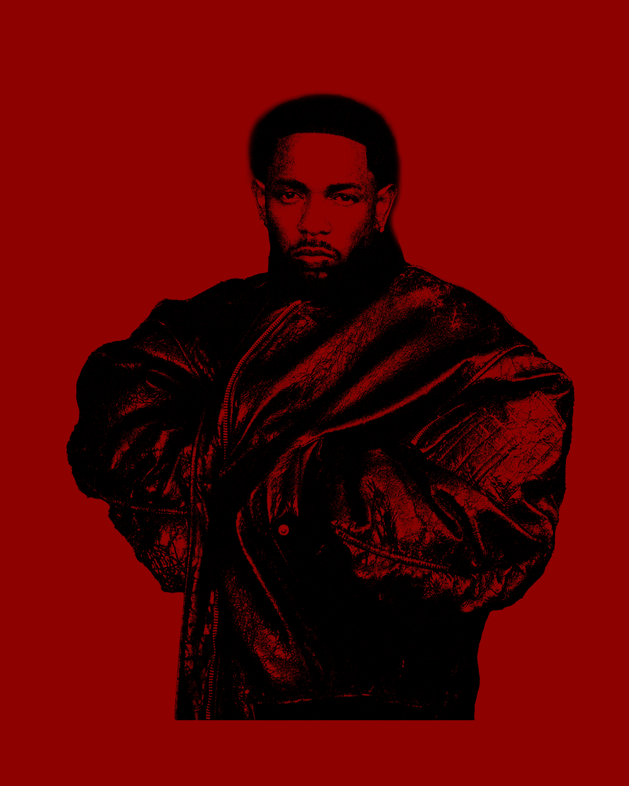

FULL NAME: Kendrick Lamar Duckworth
BORN: June 17, 1987
BIRTHPLACE: Compton, California
ASTROLOGICAL SIGN: Gemini
Kendrick Lamar Duckworth, born June 17, 1987, in Compton, California, was named after singer Eddie Kendricks. Raised in a challenging environment, his parents relocated from Chicago to escape gang culture. Despite hardships, including living in Section 8 housing and experiencing homelessness, Lamar excelled academically but was quiet due to a stutter. Inspired by his seventh-grade teacher, he developed a passion for writing, using poetry and lyrics to process trauma from witnessing gang violence and police brutality.
In high school, Lamar adopted the stage name K-Dot, began rapping, and released his first mixtape at 16, earning a deal with Top Dawg Entertainment. Over the years, he released acclaimed mixtapes, collaborated with other West Coast artists, and co-founded the rap collective Black Hippy. In 2009, Lamar dropped the K-Dot moniker to embrace his identity, focusing on personal storytelling and representing his authentic self through his music.
His major-label debut, good kid, m.A.A.d city, was both critically acclaimed and commercially successful, marking him as a rising star. Lamar’s subsequent albums, To Pimp a Butterfly (2015) and DAMN. (2017), earned multiple Grammys, with DAMN. becoming the first rap album to win a Pulitzer Prize. He claimed another Grammy for Best Rap Album with Mr. Morale & the Big Steppers (2022) and surprised fans with his sixth studio album, GNX, in November 2024.
Time, and Twitter, stops for Kendrick
He can freeze time by surprise-dropping an album because he’s one of the most popular rappers of the century, which is nothing short of a miracle. There aren’t too many albums out there as theatrical as the coming-of-age breakout album good kid, m.A.A.d city or the jazz-infused organized chaos of To Pimp a Butterfly. And shit, if there are, they definitely aren’t platinum-selling pop culture behemoths. Those early projects shaped his mythos, formed his supposed “genius,” and in an era of increasing ephemerality, had enough heft to become indispensable. (Pitchfork)